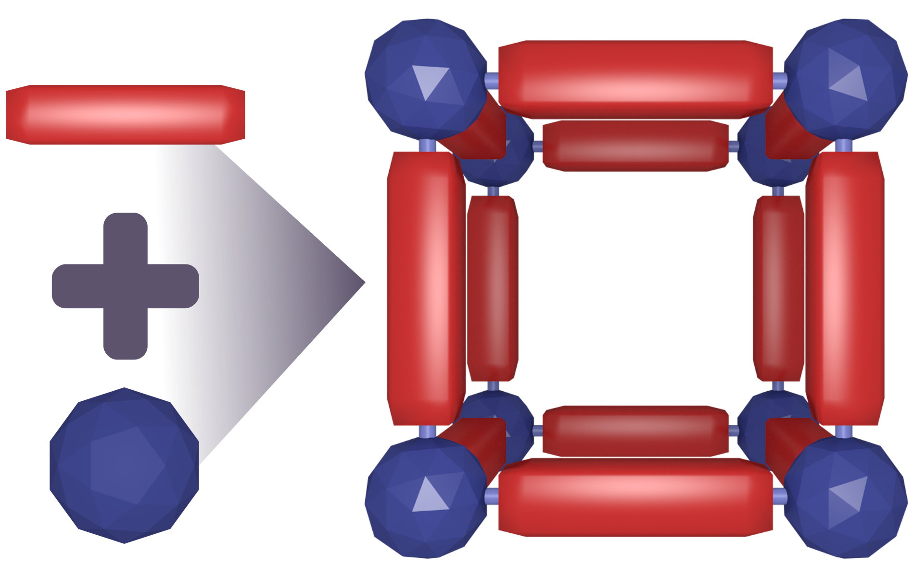

class: center, middle # Web Based Interactive Scientific Communication ## .red[Advanced Scientific Visualization and Communication Guest Lecture] ### Kutay B. Sezginel March 22, 2018 --- # Outline #### 1. Creating a web page using GitHub pages #### 2. Interactive plotting with bokeh Python library #### 3. Adding the interactive plot to your webpage #### 4. Adding interactive molecules to your webpage --- ## Requirements ### 1. Register for a GitHub account: [https://github.com/](https://github.com/) ### 2. Install .red["bokeh"] Python library - Install Miniconda with Python 3.6: [https://conda.io/miniconda.html](https://conda.io/miniconda.html) - Install .red["bokeh"] Python library [(Bokeh user guide)](https://bokeh.pydata.org/en/latest/docs/user_guide.html#userguide) - Windows: Open up Anaconda prompt and type - Mac/Linux: Open up terminal and type ```python conda install bokeh ``` - If using regular (not through conda) Python installation: ```python pip install bokeh ``` ### 3. Download the data for the plot: [click here](https://minhaskamal.github.io/DownGit/#/home?url=https://github.com/kbsezginel/visualization/tree/master/sciviscomm/data) --- # Introduction ## .red[How do we communicate online?] -- - Mostly through browsers -- - Browsers like html files -- - Html files like javascript -- - Javascript is interactive and cool -- ## .red[Why web based communication?] -- - Cross-platform - Cross-device - Low dependency - Interactive - Better presentation/visualization ??? # .red[Amazing] ## This is the future of presentation ### [More on web-based presentation platforms](https://en.wikipedia.org/wiki/Web-based_slideshow) --- ## 1. Creating a webpage using GitHub pages Clone the webpage template: - GitHub pages [Jekyll](https://jekyllrb.com/) template: [click here](https://github.com/kbsezginel/gh-pages-template) - Follow the tutorial for setting up your page: [click here](https://kbsezginel.github.io/gh-pages-template/setup) .center[<img src="https://silvrback.s3.amazonaws.com/uploads/dbe54ce7-777f-4997-9ea3-7a10b738e3a8/Github%20Header.png" alt="github" height="200" >] -- # .center[<div style="color:#680d0d" class="font-effect-fire-animation">You have a personal webpage!<div>] --- ## 2. Interactive plotting with .red[*bokeh*], a Python package ### Metal-organic frameworks as drug encapsulators .col31[] -- .col32[] -- .col33[] Pyrazinamide is a medication used to treat tuberculosis -- ### Objective - Collaborators want to see which MOF they can synthesize - Make an interactive plot to show PZA uptake and properties of each MOF --- ### .red[Start Jupyter Notebook] - Windows: Start Anaconda prompt - Mac/Linux: Start terminal ```python jupyter notebook ``` -- ### .red[Read data (csv)] #### .gray[Make sure to copy downloaded data to current directory] ```python import csv rows = [] with open('pza-uptake.csv') as csvfile: reader = csv.reader(csvfile) for row in reader: rows.append(row) ``` --- ### .red[Arrange data] ```python # Headers in the same order as the csv file headers = ['mof', 'metal', 'pza', 'err', 'vp', 'vf', 'ro', 'sa', 'dia'] # Create a dictionary where each header is assigned to all column values # This syntax uses dictionary and list comprehensions data = {h: [i[idx] for i in rows[1:]] for idx, h in enumerate(headers)} ``` -- ### .red[Plot data] ```python from bokeh.plotting import figure, show from bokeh.plotting import output_notebook p = figure() p.circle(data['vp'], data['pza']) show(p) output_notebook() ``` -- # .center[<div style="color:#680d0d" class="font-effect-fire-animation">Amazing!<div>] --- ### .red[Customize figure] #### .gray[Labels and size] ```python p = figure(plot_width=1000, plot_height=600, title='Pyrazinamide Uptake (g PZA/ g MOF)') p.xaxis.axis_label = 'Pore Volume (cm³/g)' p.yaxis.axis_label = 'Pyrazinamide uptake (g PZA/ g MOF)' ``` -- #### .gray[Markers] ```python p.circle(data['vp'], data['pza'], size=18, fill_color='salmon', fill_alpha=0.5, line_color="darkred") ``` - <a href="https://bokeh.pydata.org/en/latest/docs/reference/colors.html#bokeh-colors-groups" target="_blank">See available colors here</a> --- ### .red[Hover tool] #### .gray[Collect image files] ```python import os img_dir = '' data['images'] = [os.path.join(img_dir, '%s.svg' % i) for i in data['mof']] ``` -- #### .gray[Create hover tool] ```python from bokeh.models import HoverTool hover = HoverTool( tooltips=""" <div> <img src="@images" height="180" width="200" style="float: left; margin: 0px 0px 0px 0px;" ></img> <div> <span style="font-size: 17px; font-weight: bold;">@mof</span> </div> </div> """ ) ``` --- #### .gray[Customize toolbar] ```python p = figure(plot_width=1000, plot_height=600, title='Pyrazinamide Uptake (g PZA/ g MOF)', tools=[hover, "pan", "wheel_zoom", "box_zoom", "reset", "tap"], toolbar_location='right') ``` -- #### .gray[Add data source, hover tool and plot] ```python from bokeh.plotting import ColumnDataSource source = ColumnDataSource(data=data) p.circle('vp', 'pza', source=source, size=18, fill_color='salmon', fill_alpha=0.5, line_color="darkred") # We need to save to html file to make the images visible output_file('test.html') ``` --- #### .gray[Add more info to hover html] ```python hover = HoverTool( tooltips=""" <div> <img src="@images" height="180" alt="@images" width="200" style="float: left; margin: 0px 0px 0px 0px;" ></img> <div> <span style="font-size: 17px; font-weight: bold;">@mof</span> </div> <div> <span style="font-size: 14px; font-weight: bold;">Metal: </span> <span style="font-size: 14px; color: #f44283;">@metal</span> </div> <div> <span style="font-size: 14px; font-weight: bold;">V<sub>f</sub>: </span> <span style="font-size: 14px; color: #f44283;">@vf</span> </div> <div> <span style="font-size: 14px; font-weight: bold;">Surface Area: </span> <span style="font-size: 14px; color: #f44283;">@sa</span> </div> <div> <span style="font-size: 14px; font-weight: bold;">Pore diameter: </span> <span style="font-size: 14px; color: #f44283;">@dia</span> </div> </div> """ ) ``` --- #### .gray[Highlight selection] ```python p.circle('vp', 'pza', source=source, size=18, fill_color='salmon', fill_alpha=0.5, line_color="darkred", nonselection_fill_color="salmon", nonselection_line_color="darkred", nonselection_fill_alpha=0.5, nonselection_line_alpha=1.0, selection_fill_alpha=0.5, selection_fill_color="blue", selection_line_color="darkred") p.ygrid.grid_line_alpha = 0.2 p.xgrid.grid_line_color = None # We need to save to html file to make the images visible output_file('test.html') ``` -- #### .red[Embed html] ```python from bokeh.resources import CDN from bokeh.embed import file_html html = file_html(p, CDN, "PZA uptake") with open('pza.html', 'w') as html_file: html_file.write(html) ``` --- class: center, middle # .center[<div style="color:#680d0d" class="font-effect-fire-animation">Amazing!<div>] --- ## 3. Adding the plot to the webpage - Go to your GitHub page repository. - Add the html file using `Upload files` button. - Add the MOF images to `assets/img` folder again using `Upload files` button. - Edit `_config.yml` file and add your file to the navigation bar. The url should be the same as your html file name. Ex: url for `plot.html` should be `plot`. - The plot should be available by clicking the link in the sidebar or through `<username>.github.io/<filename>`. #### .red[It should look something like this: [click here](pza-uptake)] --- ## 4. Adding an interactive molecule to the webpage - Go to molview: [http://molview.org/](http://molview.org/) .center[<img src="http://blog.molview.org/img/brand.svg" height=100>] - Draw any molecule you like or just use the default caffeine - If you draw your own molecule click on `2D to 3D` after you are done - Click `Tools -> Embed` - Copy the HTML code - Paste the code to any markdown file --- class: center, middle # .center[<div style="color:#680d0d" class="font-effect-fire-animation">Caffeine<div>] <iframe style="width: 500px; height: 300px;" frameborder="0" src="https://embed.molview.org/v1/?mode=balls"></iframe> More information on adding interactive molecules: [click here](https://kbsezginel.github.io/research/web-molecules/) --- class: center, middle # <div class="font-effect-anaglyph">Thank you!<div>